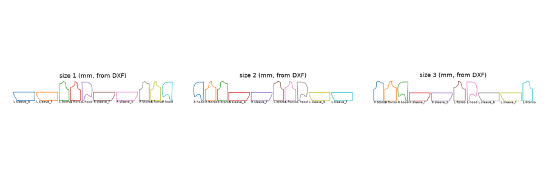
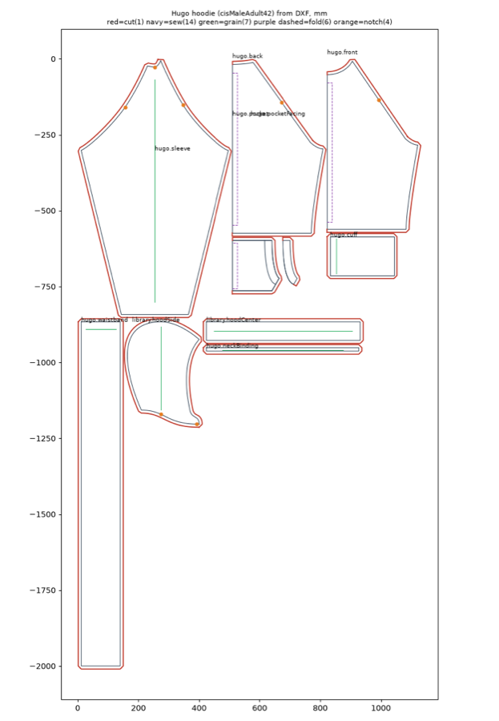
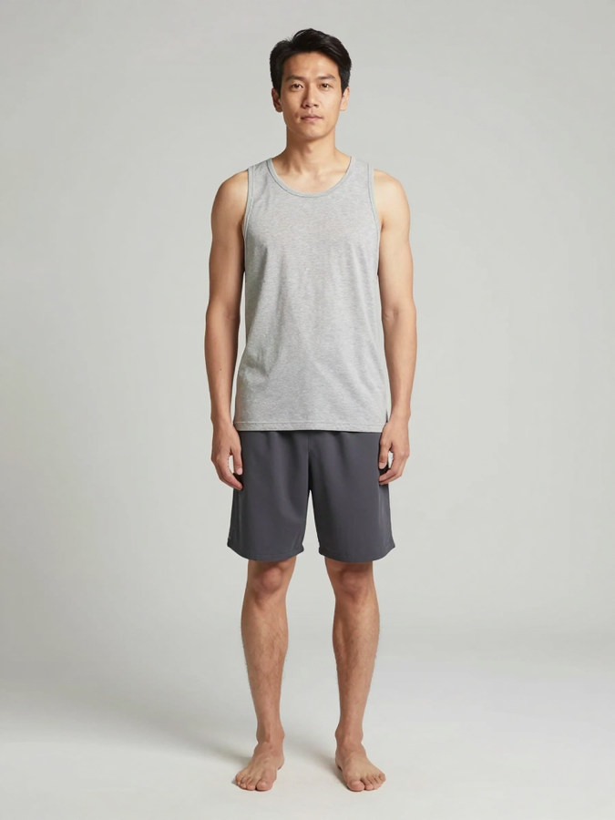
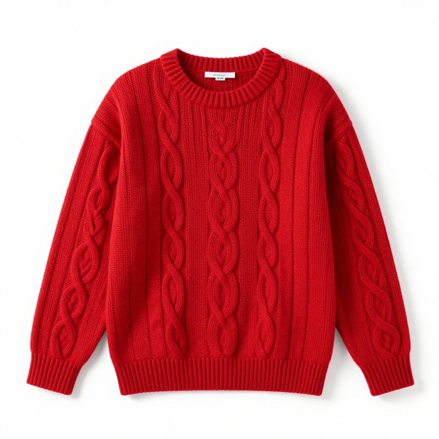
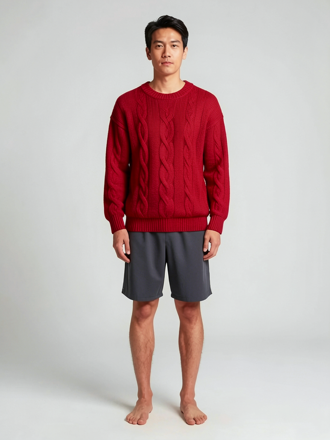

Don't automate the existing garment workflow. Remove it.
The brief turned the human work sequence of design brief → flat sketch → tech pack → pattern maker → sample → QA → factory → inspection into 13 nodes. That sequence exists because people have to interpret each other's work and because physical samples have to be repeated. An AI-native approach removes those two constraints first.
Three diagnoses
People touch too much
The goal is "people only handle contact", yet approval is required on every run. Even after the hoodie is approved, the same judgement is made again for the half-zip.
Nodes follow department lines
A single node mixes judgement (design), calculation (measurement chart), derivation (PDF) and validation (measurement order), so the whole node needs approval.
The most expensive loop does not learn
A sample costs KRW 100,000–300,000 per round and takes 1–2 weeks. Yet sample results only pile up as text in rules.md and are not fed back into the pattern automatically.
Conclusions
- Treat a garment as a program, not a document. The flat sketch, pattern, BOM, size chart, product page and care label are all compiled outputs.
- Validate one block, not each style, with a physical sample. Everything after that is a combination of parts, so code validates it.
- The market and a taste model do the approving, and people look only at what the model is unsure about.
- Switch the pattern engine from GarmentCode to FreeSewing. In hands-on tests, FreeSewing was the only one with production markings (seam allowance, notches, grain, fold lines).
- Five local open models (about 38GB) are enough at runtime. Kanana is excluded.
AI-native redesign: 13 nodes → 5 loops
If no person has to interpret anything, documents are not needed. Predict what can be predicted, and make a physical sample only the one time it is truly needed.
┌─ Learn (always on) ──────────────────────────────────────────────────────┐
│ Waitlist body data · wear feedback · return reasons → fit model │
│ Approval and rejection records · Instagram reactions → taste model │
│ Fabric measurements (shrinkage · stretch · drape) → fabric profile │
└───────────────────────┬──────────────────────────────────────────────────┘
▼
Generate Block + parts + colorway = N garment program variants + renders
▼
Select Brand constitution (code) → taste model → demand test → top k
People: only what the model is unsure about
▼
Make Compile → vendor link → physical sample (once per block) → measure → auto-correct
People: one wear check · vendor relationships
▼
Sell Product page · size recommendation · automated CS → return reasons → back to Learn
01A garment is a program, not a document
The flat sketch, tech pack, pattern DXF, BOM, costing, size chart, product page, care label and size recommendation all compile from one garment program. Nodes 2, 4, 5, the care and content label node, and 12a from the brief disappear entirely. A change is one program diff.
02Design one block, not each style
The real asset is the body block (the fit DNA) shared by the hoodie, sweatshirt and half-zip. A physical sample validates it once per block. A style is a validated block plus parts (hood, zipper, pocket), so code only has to validate the differences from the block.
03Set sizes from customer body data
The waitlist collects height, weight, usual size and fit preference. Three gender-neutral sizes are an optimisation problem: find the three boundaries that best cover the body distribution. The same data sets the production quantity per size and the size recommendation.
04The market and a taste model do the approving
- Market: Make photorealistic renders of the candidates (klein 4B) and watch the reaction on Instagram and the waitlist. Only the winners go to sample.
- Taste model: Train an "OPEN LATE-ness" scoring model on approval and rejection records and references. Clear cases pass automatically, and only borderline cases are asked about (active learning).
- Brand constitution: Rules such as the matte finish, outer fabric × lining colour pairs and flower bartack placement are written once and checked by code.
05Measurement → auto-correction instead of sample QA
When the physical sample arrives, enter on-body photos, a phone 3D scan and a few hand measurements, and the program corrects the ease and grade by itself. Fabric is measured once at the start, and shrinkage compensation goes into the pattern automatically. The only thing left for a person is "how it feels to wear".
06Vendor contact is one link, not a relay
Vendors download the package from a link and upload corrected DXFs, photos and quotes. An agent parses them and applies them to the program. Batching several styles cuts sample room round trips.
07Photo shoots and CS are program outputs too
One real hero photo plus the program produces on-model shots per colorway and fit visualisations per size (labelled "Virtual model"). The size recommendation goes on the product page first, so most customer support (CS) requests never arise.
Before and after (per style)
| Existing brief | AI-native | |
|---|---|---|
| Human involvement | 11 nodes | 2–3 times |
| Samples | 2–3 rounds (KRW 100,000–300,000 per round) | 1 per block, then 0–1 per variant |
| Design decisions | The owner's gut feel | Market reaction + taste model + people only for borderline cases |
| Sizing | Conventional 1·2·3 | Optimised for the customer body distribution |
| Production quantity | Gut feel | Waitlist size distribution |
| Documents | Written and corrected by people | Compiled from the program |
| Learning | rules.md text | Fit, taste and fabric models update every cycle |
Node re-slice and approval inheritance
Even if the redesign cannot happen all at once, just splitting the existing nodes greatly widens what can be automated. Every step falls into one of five types.
| Type | Who | Approval |
|---|---|---|
| Generate | Model | Only when the result is a judgement call |
| Derive | Code (spec → PDF · DXF · tables) | None |
| Validate | Code (rules · tolerances) | None; stops on failure |
| Decide | Person or policy | A person only when policy cannot settle it |
| Contact | Person | — |
Splitting each node
| Node in the brief | Result of the split | What is left for people |
|---|---|---|
| 2 Flat sketch · spec | 2a design selection (model, within a set of options) · 2b measurement chart (code: block + grade rules) · 2c document derivation · 2d validation | 2a only. The model does not produce measurements |
| 3 Fabric sourcing | Full-package production, so the factory sources the fabric. Required fabric spec (gsm · fibre content · shrinkage tolerance · test standards) + checking replies against it | Whether to accept the fabric offered |
| 4 Pattern generation | 4a spec-fitting solver · 4b production layer (grain · notch correction) · 4c DXF derivation · 4d validation | None |
| 5 Simulation check | Deleted. Absorbed into 4d (measurements taken from the pattern ↔ spec) | None |
| 6 Sewing spec | Library of defaults per garment area applied automatically + only changes shown | First style only, then inherited |
| 8 Sample QA | 8a measurement entry · 8b spec comparison (tolerance table) · 8c defect detection · 8d change request · 8e parameter correction proposal → 4a | Wear feel only |
| 9 Colorways | Palette rules (outer fabric × lining contrast, "lit window" colour range) narrow it to 3 candidates | Choosing from the 3 · swatch |
| 10 Factory order | Quote OCR → cost and margin calculation (markup 2.5–3×) → comparison table | Contact · order decision |
| 11 Inspection | AQL sample size (ISO 2859-1) · OCR check of label fibre content · defect detection | Exceptions only |
| 12 Merchandising · CS | Size chart by code from the spec, copy by a model · routine CS questions answered automatically by rules | First approval of the template · exception CS |
The 4a spec-fitting solver is the biggest opportunity. Generate the pattern → measure finished dimensions from the pattern → adjust ease and body-shape parameters by the gap from the spec → regenerate, looping automatically until the result is within tolerance. This replaces the pattern maker's manual iteration, and once 8e measured corrections come in, it gets more accurate with every sample.
Move approval from the run level to the asset level
| Approved item | Once approved | Auto-pass condition after that |
|---|---|---|
| Base block (hoodie body) | Inherited by the half-zip and sweatshirt | Changes from the block are within the allowed range |
| Sewing spec library | All styles | No new garment areas |
| Colour palette | All colorways | Colours inside the palette |
| Product page template | All products | Only slots change |
| CS policy | All routine questions | Cases covered by the policy |
Only the first style needs 9 approvals. From the second style on, that drops to 2–3 (design selection · wear feel · launch).
Automation missing from the brief
Size recommendation
Height, weight, usual size → 1·2·3. Calculated from the finished measurements in the spec. It has a big effect because there are three gender-neutral sizes.
Production quantity planning
Order ratios from the waitlist size distribution. This does the most to reduce inventory risk on a small first run.
Cost and margin
It is in the script list but has no node. BOM + quote → cost → markup check.
Returns → fit feedback
Collect return reasons ("too big", "sleeves too long") by size and turn them into grade correction proposals.
Fabric and wash testing
A node that measures "sturdiness that does not change with washing". Shrinkage (ISO 5077) · pilling (ISO 12945) · colour fastness (ISO 105-C06).
Care and content label · disclosures
Fibre content, country of manufacture, year and month of manufacture and care instructions are legally required. Generated directly from the spec.
Wording changes to the brief
- Record rejection reasons as a reason code + numbers + a note instead of free text. Text is for prompts only.
- Sample pass: code decides the measurement pass from the tolerance table, and people judge only wear feel and appearance.
- Node 5: VLM comparison of simulation renders → comparison of pattern measurements.
- Hosting: OpenRouter by default → local by default, with OpenRouter as the outage fallback.
Node-by-node verification of the brief
These are verdicts on the nodes exactly as the brief has them. The evidence is HF, GitHub and PyPI metadata, experiments run directly on this Mac Studio, and secondary sources.
| # | Node | Model · tool in the brief | Verdict | Evidence | Recommendation |
|---|---|---|---|---|---|
| 1 | Design brief · concepts | Qwen3.6 · klein 4B | Fix | klein 4B is Apache-2.0. Edit measured at 34 s · 11.8GB | Keep + brand style LoRA |
| 2 | Flat sketch · spec | Qwen3.6 (JSON) | Fix | The mlx-lm server does not enforce JSON schemas (v0.32.0) | Constrained decoding with outlines · xgrammar. Measurements come from code |
| 3 | Fabric sourcing | Qwen3.6 + template | Keep | Text + template, low risk | Add test requirements |
| 4 | Pattern generation | pygarment · ezdxf | Replace | No seam allowance, notches, grain or grading. Sleeve split in half. Seam topology changes with size | FreeSewing + ezdxf |
| 5 | Pattern simulation check | GarmentCode simulation · VLM | Not usable | The Warp fork has a non-commercial license. On macOS the simulation silently does nothing (issue #60) | Compare pattern measurements (code) |
| 6 | Sewing spec selection | 3D viewer | Fix | Clicking on a 2D SVG works right away | 2D first, library of defaults |
| 7 | Handoff to sample room | Person | Keep | — | Package and question list automated |
| 8 | Sample QA | Hand measurement · Qwen vision | Replace | Measuring from photos has ≈ 1cm error vs. a ±1–2cm tolerance. No VLM benchmark for sewing defects | Measurement form + AnomalyDINO → VLM → person |
| 9 | Colorways | Mask + klein | Fix | Phone photos: ΔE00 11.7–42.3. Colour cannot be finalised from photos | LCh conversion + lab dips measured with a spectrophotometer |
| 10 | Factory order | Person | Keep | — | Quote comparison automated |
| 11 | Inspection | PaddleOCR-VL · VLM | Fix | PaddleOCR-VL is Apache-2.0 and explicitly lists Korean | A/B against GravityOCR-KO (MIT) |
| 12 | Merchandising · CS | Kanana-2 / Qwen | Replace | Kanana license: mandatory "Powered by Kanana" credit → clashes with the brand tone | Qwen3.6 + A.X-3.1 · Gravity A/B |
| 13 | Trademark watch | KIPRIS Plus | Fix | The trademark API needs a separate usage application | Keep |
Factual corrections to the brief
- Qwen3.6-27B is not a separate vision model. 35B-A3B also accepts images, so there is no need for a separate vision model.
- GarmentoPIA has not released its code, and SwiftTailor has no code or weights link.
- No try-on LoRA for klein 4B was found. The try-on LoRAs that were confirmed are based on 9B, so they are non-commercial.
- DXF R12 has no units header. Units have to go in as text, as AAMA does, to prevent the problem of "unit errors appearing silently".
Operations · Code · Usability
Operations
One Mac is a single point of failure. Batch nodes are fine, but CS needs an always-on response, so there has to be a fallback. Pin the model list in a lock file so the cache does not fill the disk.
Code
Generate the JSON Schema for spec.json from Pydantic. Constrained decoding, validation and forms all share the same schema. Cache node outputs by input hash. A file-based state machine is enough for the orchestrator.
Usability
Group the 9 approval points into 3 reviews (design · sample · launch). The approval screen shows only an automated validation summary, the diff from the previous version, and one line on what to decide.
Models to use in the nodes
All open weights, run locally. The core set totals about 38GB, so it all loads at once on an M4 Max with 128GB.
| Model | Size | License | Nodes | Notes |
|---|---|---|---|---|
| Qwen3.6-35B-A3B 4bit | 20.4GB | Apache-2.0 | 1 · 2 · 3 · 8 · 11 · 12 | Native VLM. Fast because only 3B are active. One model for text + images |
| FLUX.2 klein 4B | 15GB | Apache-2.0 | 1 · 9 · 12 | 9B and LoRAs based on 9B are excluded because they are non-commercial |
| PaddleOCR-VL-1.5 / GravityOCR-KO | 1–2GB | Apache-2.0 / MIT | 11 | Pick one through A/B |
| SAM 3 8bit | 1GB | SAM License (commercial use allowed) | 8 · 9 | Segments garment areas from text |
| DINOv2 + AnomalyDINO | <0.5GB | Apache-2.0 | 8 · 11 | Detects defects from a few normal samples, with no training |
A/B candidates (only when testing)
- Qwen3.8-27B (dense VLM, Apache-2.0, 16GB) — hard vision reading tasks
- SKT A.X-3.1 (Apache-2.0) · Trillion Gravity-30B-A5B (Apache-2.0) — Korean CS
Not used
- Kanana-2 — mandatory "Powered by Kanana" credit, naming rules for derivative models, separate contract for API resale
- EXAONE 4.5 — non-commercial (NC)
- FLUX.2 dev · klein 9B — non-commercial
Training plan: once approval data accumulates, train on that
| Target | Method | Start condition |
|---|---|---|
| Taste model | DINOv2/v3 embeddings + preference head (Bradley-Terry) | 50–100 approval and rejection records |
| Brand mood images | klein base 4B LoRA (mflux-train) | 20–40 approved mood images |
| Defect detection | No training, memory bank | 20–50 normal shots |
| Korean CS tone | LoRA SFT (mlx-lm) | 200–500 approved response pairs |
| Fit model · size boundaries | Optimisation (not training) | Waitlist body data + public body measurement data |
Experimental evidence
The experiments behind these judgements were run directly on this Mac Studio (M4 Max, 128GB).
Pattern engine: GarmentCode vs FreeSewing


| Check | GarmentCode | FreeSewing |
|---|---|---|
| Runs on Apple Silicon | Yes | Yes (Node, headless) |
| Seam allowance · notches · grain · fold lines | None (0 grep hits in the code) | Yes |
| Cutting units | Split for simulation | Real cutting pieces |
| Fabric separation | None | Separates outer fabric / rib (various) |
| License | MIT, simulation fork is non-commercial | MIT |
| Automated checks (Hugo) | — | 148 of 154 passed. The gate caught a missing grain line on the pocket facing |
| DXF round-trip error | 0.0000mm | Layers 1 · 14 · 4 · 7 · 6 · 15 |
Render: FLUX.2 klein 4B on-model image



q8 at 4 steps (38.5 s) and q4 at 8 steps (66.5 s) show almost no quality difference → q4 at 4 steps is the most efficient.
The validators need validating too
- In the GarmentCode check, seam lengths appeared to be off by 28–38mm → the cause was an error in the validation script, which approximated arcs as straight lines.
- The FreeSewing check flagged the open cut lines of on-fold pieces as failures → fixed so they pass when the endpoints lie on the fold line.
- Lesson: test validation scripts separately against hand-calculated golden cases.
Risks and next experiments
What AI cannot replace
Hand feel and wear feel
How the fabric feels to the touch and how it sits on the body. A person wears it once per block.
Vendor trust
Early relationships with sample rooms and factories are a person's job. A link only reduces the contact.
Render demand tests
If the render differs from the real garment, it is deception. State "upcoming design", use the Virtual model label, and show final products in real photos.
Regulatory checks
- Household textile products: in the "safety standard compliance" category. There is no KC certification, but fibre content, manufacturer, country of manufacture, year and month of manufacture, size and care instructions must be labelled.
- Korea Fair Trade Commission (KFTC) endorsement and testimonial review guidelines, amended 2026-06-01: when an AI Virtual model recommends or endorses a product, it must carry the "Virtual model" label. Cases with only on-model shots are unclear, so labelling is recommended (secondary source).
- Trademark: a US registration for OPEN LATE exists in Class 25. File first in Korea in Class 25 (same as the brief).
Test the riskiest assumptions first
- How much of the body distribution do three sizes cover?Optimise the three gender-neutral size boundaries on public body measurement data (Size Korea) and measure the coverage. This is the premise of redesign 03.
- Does the spec-fitting solver converge?Check whether adjusting FreeSewing options reaches the target finished measurements (chest · length · sleeve) within tolerance. This is the premise of redesign 01 and 05.
- Will the sample room accept our DXF?Get a sample DXF, match its layers, units and notch format, and compare on a round trip. This is the premise of the production path.
- Does the taste model predict approvals?Train a preference head on reference brand images + the first 50 approval and rejection records, and check accuracy on a held-out set. This is the premise of redesign 04.
Questions for the sample room
- Which CAD and DXF formats they accept (AAMA / ASTM, AutoCAD version) — ask for 1 sample DXF
- How units are marked · notch shape (V / slit / T) and layers
- Whether seam allowance is included · how on-fold pieces are marked (unfolded piece vs half + fold line)
- Who handles grading and marking, and whether a grade rule file is needed
- Sample measurement tolerance per POM